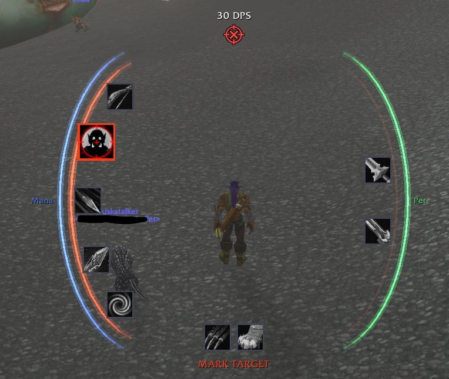
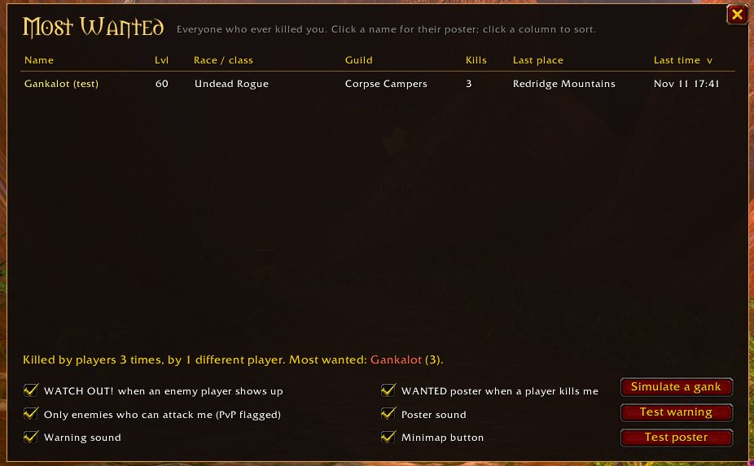
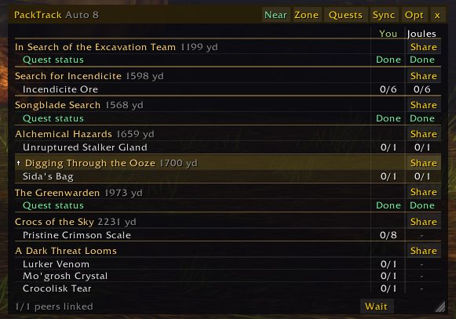
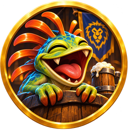

ForeCast
Rotation coach for every class
v0.8.0

- Red: cast now. Green: next up. Yellow: wait.
- Knows your class, spec, level, talents, form and pet
- Combat halo, HUD and action bar glows, PvP mode
Three free addons by Photronix: a rotation coach for every class, a PvP grudge keeper, and a party tracker that keeps your pack together. Each one has a live demo you can play right here.
All free, all made for Forever, all set up with buttons and checkboxes. Chat commands are there if you like them, never required.




Click the laughing murloc, spin the wheel, and say something gloriously dumb: WoW jokes, fish tales, campfire stories, Chuck Norris and more.
CurseForgeMake your own little addons without writing a line: when something happens, do something. Buttons, alerts, info windows and chores.
CurseForgeWhisper the keyword, get a guild invite. Recruiting on autopilot, so you can keep playing.
CurseForgeEvery release is played in game first. ForeCast alone has hundreds of hours of real fights behind it.
Forever hides cooldowns, health and the combat log in fights. These addons work with what the game allows instead of pretending it isn't there.
Each version runs in a browser sandbox of the WoW API and through a code check against the game's own API annotations.
Every setting is a checkbox or a slider in a tabbed window or behind the minimap button.
Comment on the addon's CurseForge page: what you did, what happened, and the error text if there is one.
ForeCast and PackTrack each have a full wiki with every setting, tab by tab.
All projects, including the ones not on this page, are on one author page.